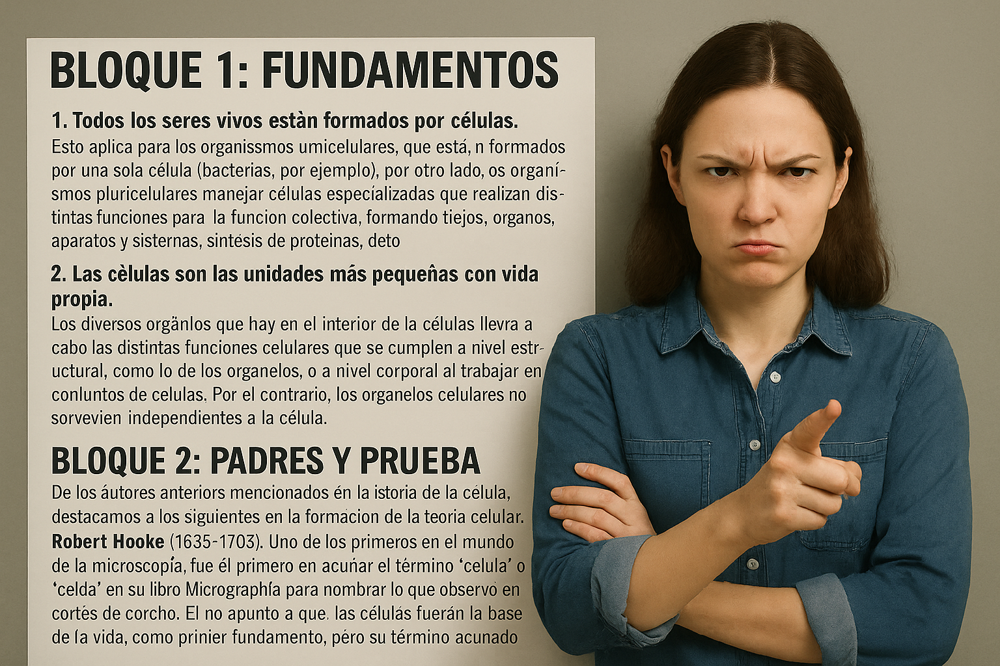

Enunciado, postulados y aplicaciones de la teoría celular.
Comprende cómo todas las formas de vida están formadas por células.
Todos los seres vivos están formados por células: Esto aplica para los organismos unicelulares, que están formados por una sola célula (bacterias, por ejemplo). Por otro lado, los organismos pluricelulares manejan células especializadas que realizan distintas funciones para la función colectiva, formando tejidos, órganos, aparatos y sistemas, síntesis de proteínas, detoxificación, etc.
2. Las células son las unidades más pequeñas con vida propia. Los diversos orgánulos que hay en el interior de las células llevan a cabo las distintas funciones celulares que se cumplen a nivel estructural, como lo de los organelos, o a nivel corporal al trabajar en conjuntos de células. Por el contrario, los organelos celulares no sobreviven independientes a la célula.
3. Las células proceden por división de otras células por varios procesos de replicación de ADN. Las células se multiplican por fisión binaria en procariotas, duplicando su ADN, y mediante mitosis y meiosis en eucariotas. Todas las células, sin excepción, provienen de células previamente existentes.
De los autores anteriores mencionados en la historia de la célula, destacamos a los siguientes en la formación de la teoría celular:
Robert Hooke (1635–1703). Uno de los primeros en el mundo de la microscopía, fue el primero en acuñar el término “célula” o “celda” en su libro Micrographia para nombrar lo que observó en cortes de corcho. Él no apuntó a que las células fueran la base de la vida, como primer fundamento, pero su término acuñado se mantiene hasta hoy.
Antonie van Leeuwenhoek (1632–1723). Visto como el padre de la microbiología, fue un fabricante de lentes que utilizaba para controlar la calidad de la tela en su fábrica. Alejado de ello, descubrió “animales” en gotas de agua y muestras de esperma, y dibujó las primeras ilustraciones de bacterias microscópicas.
>